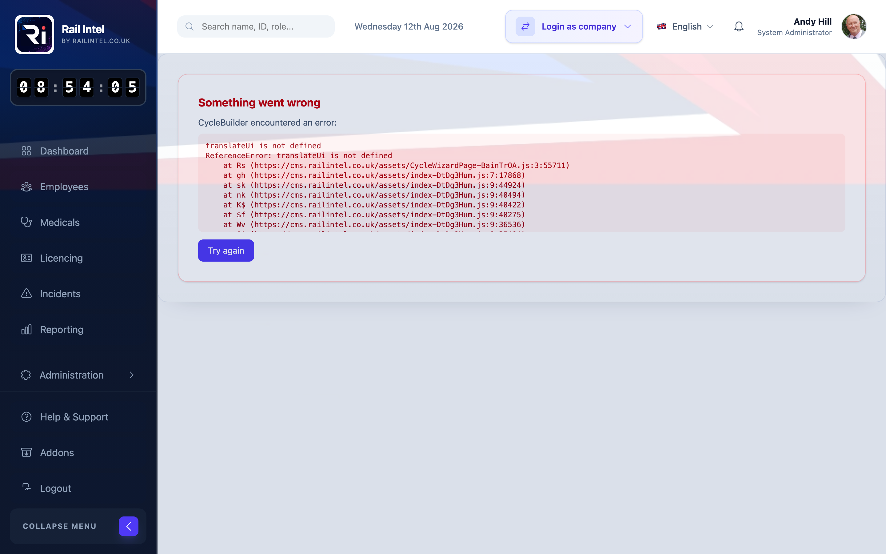
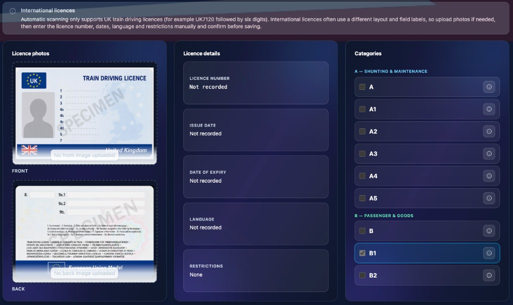
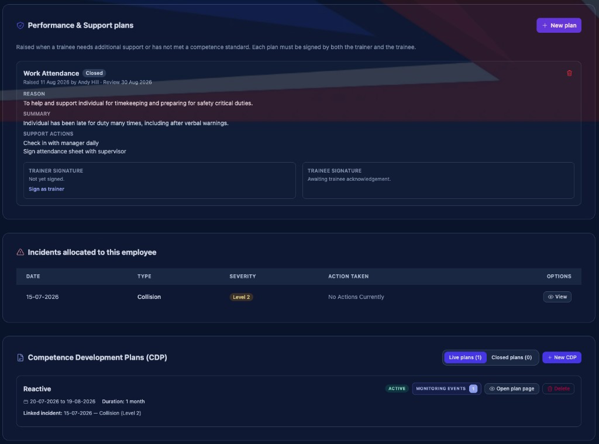
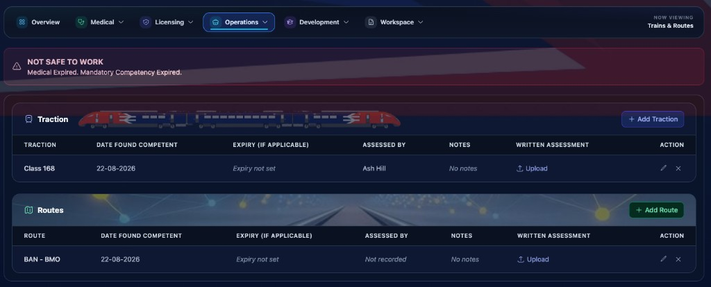
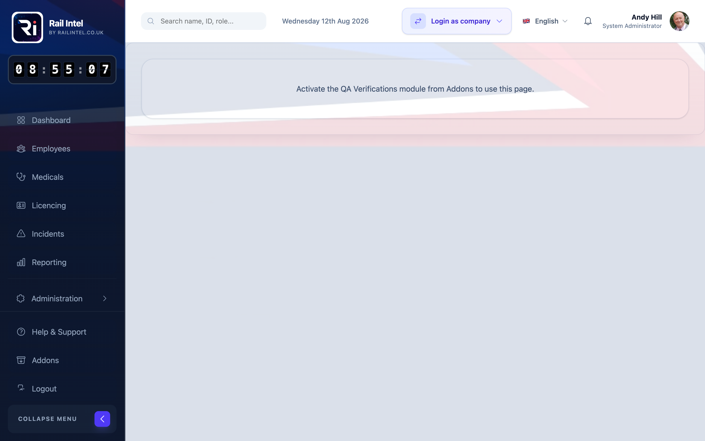

-
Live compliance
On-track, off-track and due-soon in one dashboard.
-
Safe to work
Mandatory expiry flags before anyone signs on.
-
QA verification
Company-wide checks across every module.
-
Built for rail
Roles, routes, traction, PTS and driver cycles.
Command centre
One dashboard for the whole operation.
Stop chasing spreadsheets. See the state of the railway’s people the moment you log in.
- Live counts for on-track, off-track, overdue assessments and medicals — from your company data, not a weekly export.
- Open any person and drill into team compliance, incidents and QA in a click.
- Reporting and analytics for incidents, safety briefs and compliance rates — ready for reviews and audits.
Competency engine
Build cycles. Assess in the field. Never miss an expiry.
Competency is not a document store. It is a live cycle with a start date, an expiry, and evidence.
- Start from a ready-made framework or build a custom cycle in four steps — method, details, criteria, events.
- Assign live cycles and surface not safe to work the moment a mandatory competency lapses.
- Assess against structured criteria, attach files and photos, and keep saving even if the signal drops.

Workforce records
Every licence, medical and qualification on one record.
If it has an expiry date, it belongs on the person — not in a shared drive.
- Store train driving licences, categories and competence certificates with a clear audit trail.
- Track ORR medicals and occupational health so expired medicals never slip through.
- Training, qualifications and leave sit alongside the same employee — not in another spreadsheet.

Safety operations
Incidents, plans and cab passes — linked to the person.
When something happens on the railway, the record should already know who was involved.
- Log and allocate incidents, then raise CDPs and performance support plans from the same record.
- Issue and track cab passes with a clear colour status.
- Safety briefs stay attached to the people who signed them — ready when you need to prove it.

Routes and hours
Traction, routes and hours that prove competence.
Route knowledge and hours on type are not optional extras. They are part of the same compliance picture.
- Configure traction types, routes and depots to match how your railway actually runs.
- Record trainee hours, encounters and manager hours against progress — not a separate logbook.

Assurance
Verify the whole company. Configure it once.
QA should not wait for an audit week. Run verification whenever you need the truth.
- Run QA across licences, medicals, cycles, incidents and more — then see compliant, advisory and review at a glance.
- Set organisation structure, role permissions and company standards so the platform matches your operation.
- Tasks and employee messaging keep follow-ups inside the system, not in a side inbox.

How it works
Stand up the platform once. Then run the railway with live compliance.
Configure your company
Roles, standards, traction, routes and cycle templates — set up once to match how you already work.
Assign and record
Put people on cycles. Capture assessments, medicals, licences and hours as the work happens.
Monitor and verify
Watch live compliance and run QA verifications before anyone is unsafe to work.
Why Rail Intel
Built for safety-critical rail — not generic HR.
-
Expiry alerts that matter
Competencies, medicals and licences with due-soon and overdue in one place. Never miss a renewal.
-
Audit-ready records
Verification history, evidence on assessments, and exports for reviews, tenders and the regulator.
-
Built for rail
Driver cycles, PTS, traction, routes, cab passes and safety briefs — not a generic HR tool.
-
Team and roles
Organise people by role and depot. Control who sees what with company permissions.
-
Live reporting
Incidents, monitoring, safety briefs and compliance rates on one analytics view.
-
Secure access
Company codes, logged access and role-based permissions. Only the right people see what they need.
Put your competency data to work.
Sign in to Rail Intel and see who is safe to work — live.
Open Rail Intel